Project Overview
The goal was to design a complete EMG-based human-computer interface: detect muscle contractions from surface electrodes, process the millivolt-level EMG signal through an 8-stage analog pipeline, and generate an electrically isolated digital output to trigger a mouse click — used to play Flappy Bird in real time.
The system had to detect EMG signals of 5–10 mV from surface electrodes, amplify with high gain while rejecting common-mode noise, bandpass filter the EMG power band (30–300 Hz), and produce a clean, isolated click pulse for every detected muscle contraction.
LTSpice Schematics
The full signal chain was designed and simulated in LTSpice across three schematic sheets before being built on breadboard.
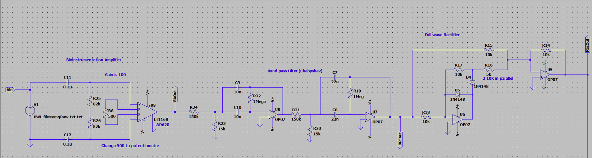
Stages 1–3 · Bioinstrumentation Amp · Chebyshev BPF · Full Wave Rectifier
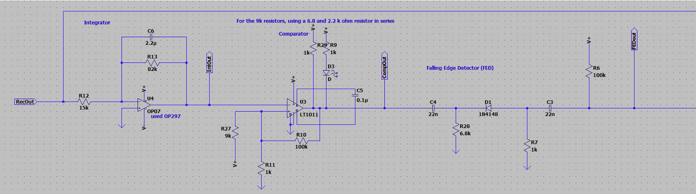
Stages 4–6 · Integrator · Comparator · Falling Edge Detector
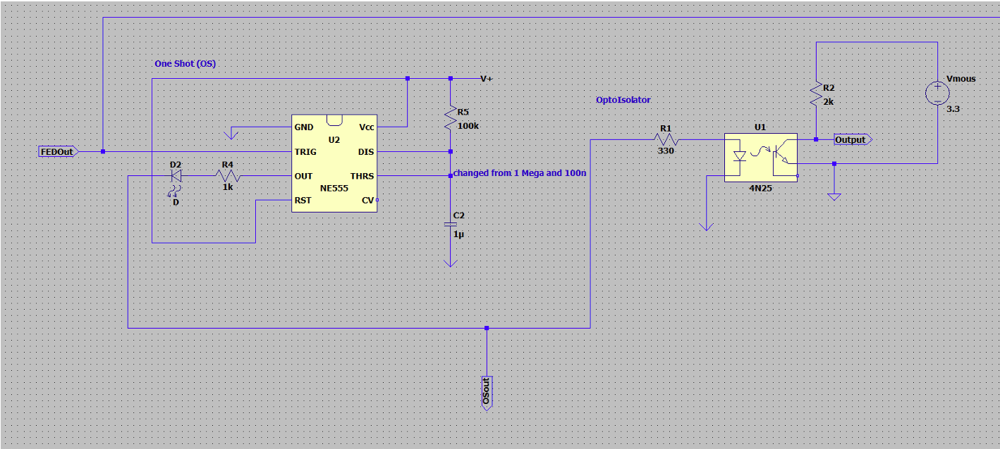
Stages 7–8 · NE555 One-Shot · 4N25 Optoisolator
Breadboard Implementation
The complete 8-stage pipeline built on breadboard with color-coded wiring — each stage numbered and verified end-to-end.
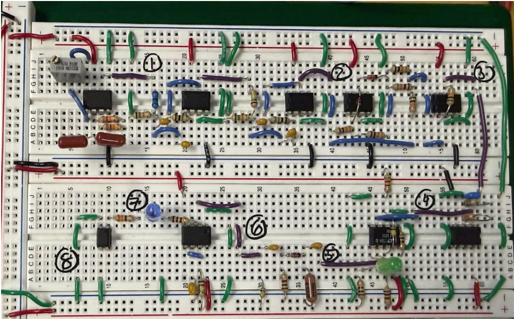
Completed breadboard · All 8 stages · Color-coded wiring
System Architecture
The signal chain moves through 8 discrete analog stages, each designed and simulated in LTSpice before being built on breadboard. The final breadboard used color-coded wiring: green for battery ground, red for +5V, black for −5V, purple for stage outputs, and blue for inter-component connections.
Stage 01
Bio-Instrumentation Amplifier
AD620 with RG = 200 Ω → gain of 248. Rejects common-mode noise from differential EMG electrodes. Floating reference ground modeled with R/C parallel (1 PΩ / 10 pF).
Stage 02
Bandpass Filter
Chebyshev topology. Low cutoff: 30 Hz, high cutoff: 300 Hz — matched to the primary EMG power band. Higher-order filters were considered but rejected due to added complexity.
Stage 03
Full Wave Rectifier
Converts the bipolar filtered EMG signal to a unipolar absolute value for downstream envelope detection.
Stage 04
Integrator / Envelope Detector
Smooths the rectified signal into an amplitude envelope proportional to muscle activation level.
Stage 05
Comparator
LT1011. Thresholds the envelope against a set reference voltage — outputs a digital HIGH when a contraction is detected.
Stage 06
Falling Edge Detector
Generates a narrow pulse on the falling edge of the comparator output — triggers exactly one event per contraction end.
Stage 07
One-Shot (555 Timer)
NE555 in monostable configuration. Produces a clean, fixed-width output pulse regardless of input noise, decoupling click duration from EMG signal variability.
Stage 08
Optoisolator
4N25. Provides full electrical isolation between the EMG circuit's floating ground and the computer's USB ground, safely triggering a mouse click without ground loop issues.
Simulation Waveforms
LTSpice simulation output for each stage, showing the signal transformation from raw EMG input through to the final isolated click pulse.
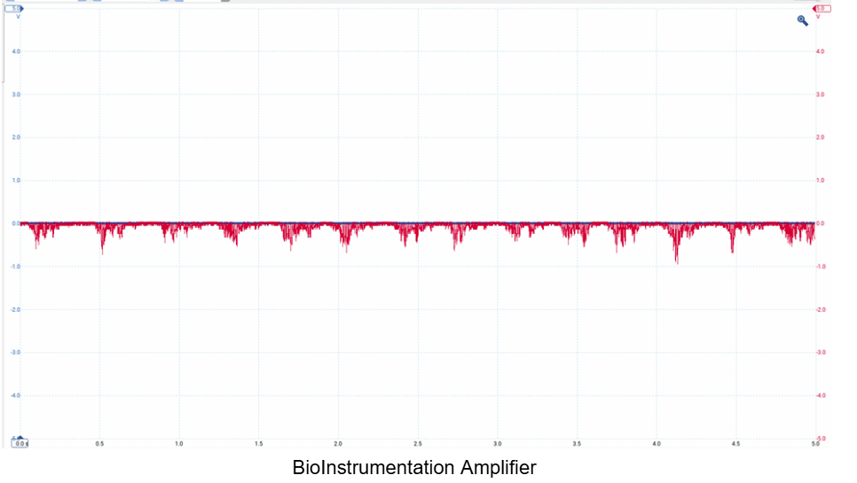
Stage 1 · BioInstrumentation Amplifier
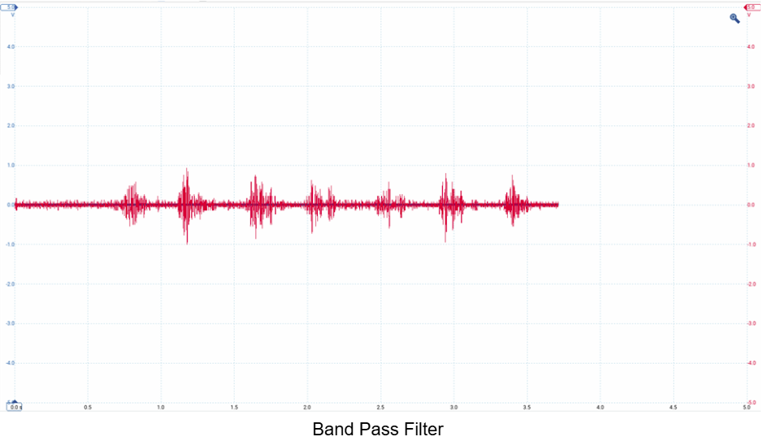
Stage 2 · Band Pass Filter (30–300 Hz)
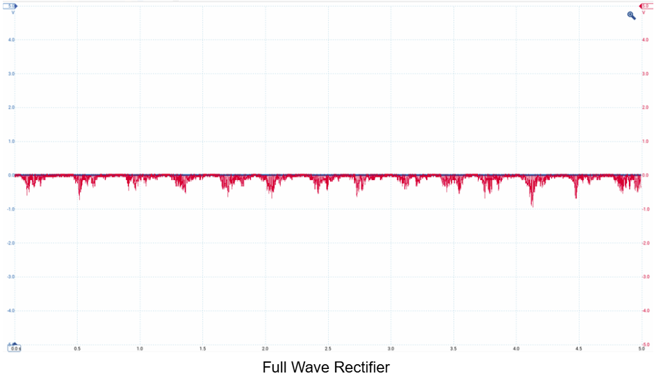
Stage 3 · Full Wave Rectifier
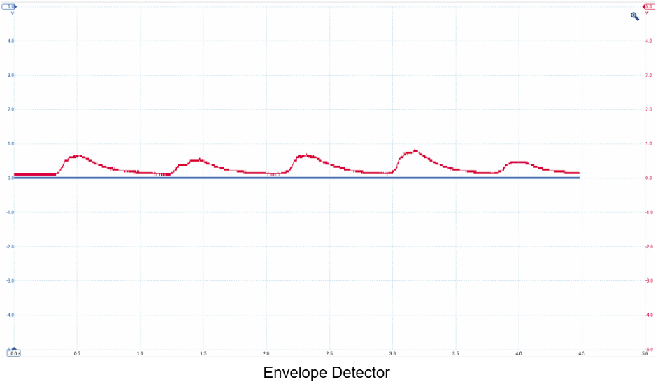
Stage 4 · Envelope Detector
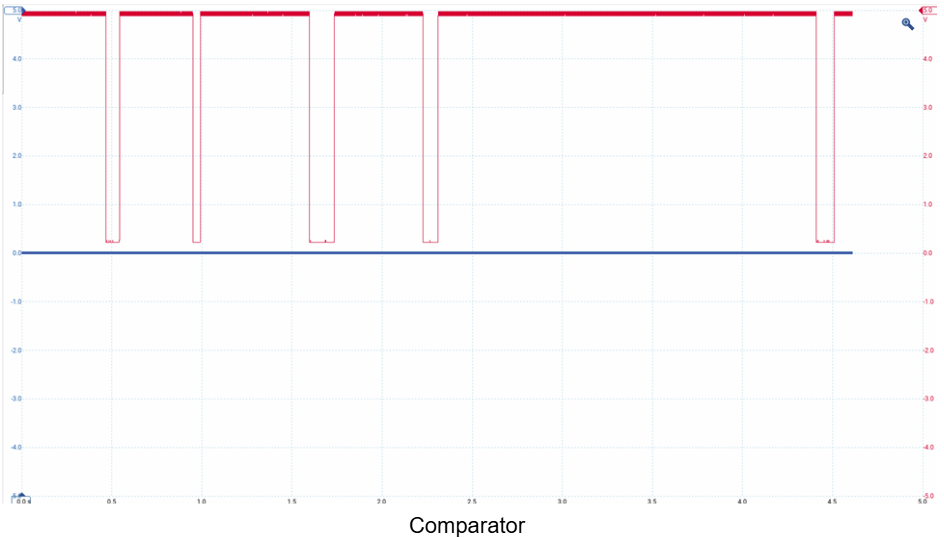
Stage 5 · Comparator
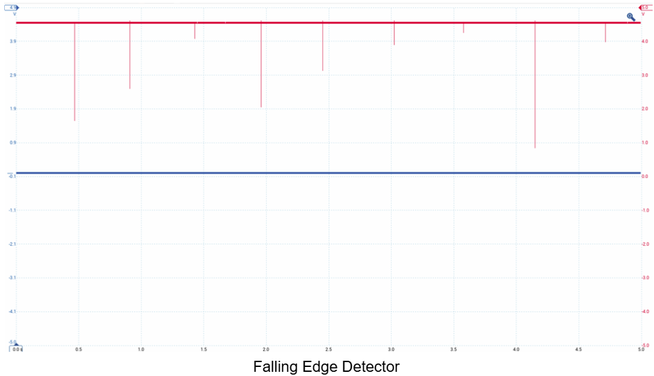
Stage 6 · Falling Edge Detector
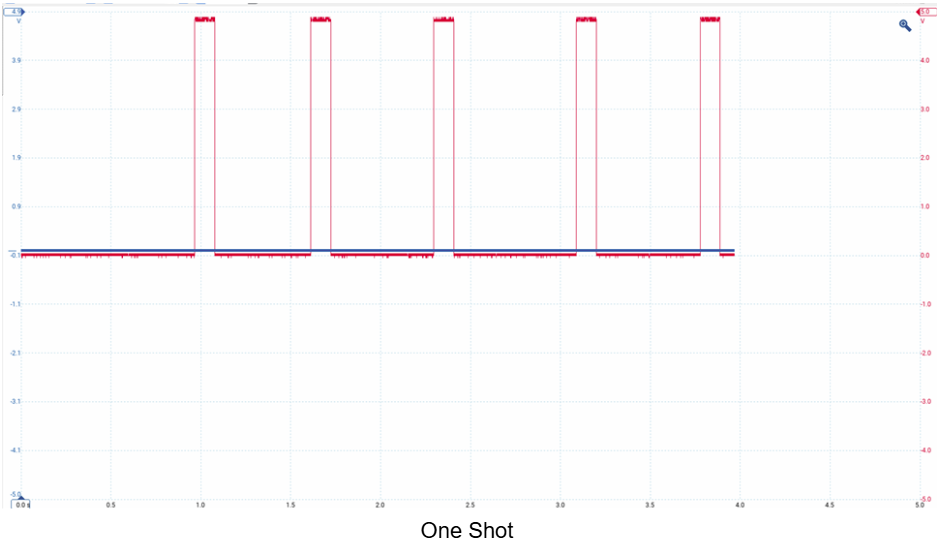
Stage 7 · One-Shot (NE555)
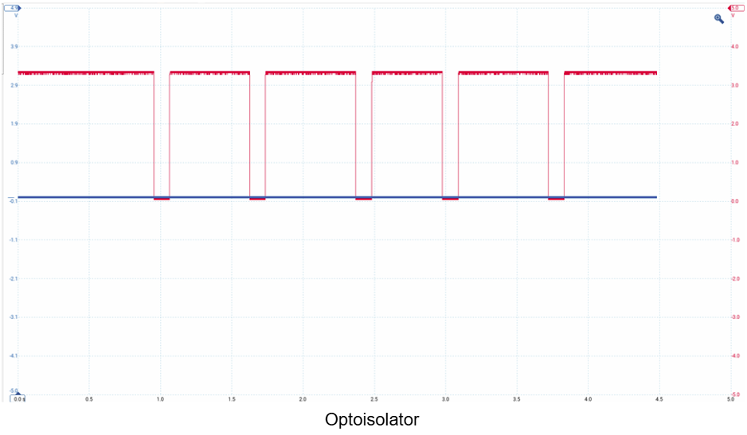
Stage 8 · Optoisolator Output
Key Design Decisions
| Parameter | Value | Rationale |
|---|---|---|
| Instrumentation Amp Gain | 248 (RG = 200 Ω) | Lower gain of ~100 tested but insufficient signal amplitude for downstream stages |
| BPF Passband | 30–300 Hz | Matched to main EMG spectral power band |
| Filter Topology | Chebyshev | Higher-order filters rejected — added complexity, more debug time |
| Ground Isolation | 1 PΩ ‖ 10 pF | Models floating reference ground per 4N25 datasheet recommendation |
Noise Rejection Validation
The system was tested with three input conditions using lab10_emg.txt:
60 Hz power line interference: Added as common-mode signal. The bioinstrumentation amplifier's high CMRR and the bandpass filter attenuated it — output plots were identical to the clean signal, confirming the noise was fully rejected.
Baseline wandering and motion artifacts: Added as low-frequency components. The 30 Hz high-pass characteristic of the bandpass filter removed these artifacts, producing clean downstream outputs identical to the interference-free case.